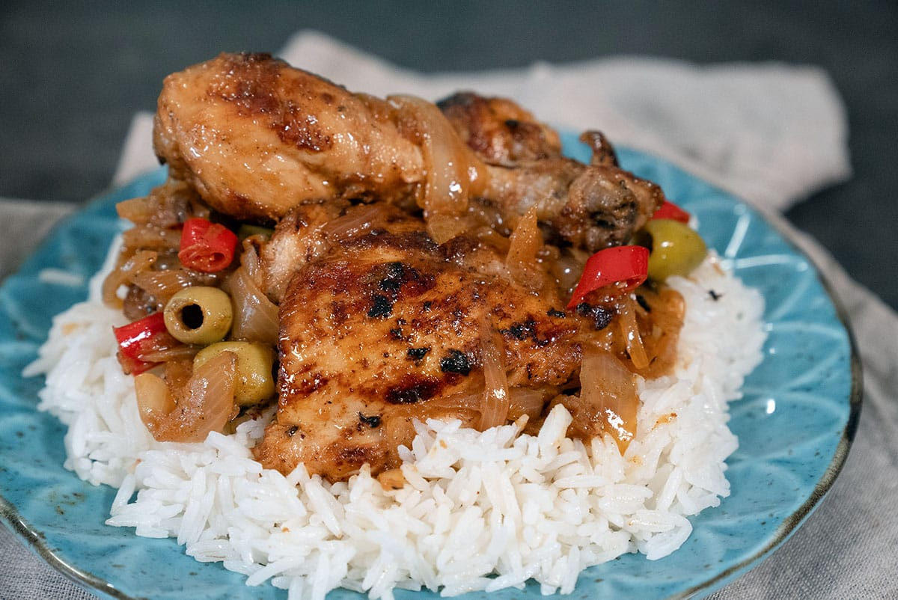

Yassa (meaning "to fry" in Casamance Creole) is a traditional culinary specialty of Senegalese cuisine, extended to West African cuisine, made from pieces of meat or fish marinated in lemon juice and spices, then fried, then simmered in a yassa sauce with onions.
Yassa, of Diola origin from West Africa, is in particular a specialty of Casamance[1], south of Dakar in Senegal, widespread in the countries of West Africa and French West Africa, notably in Senegal and Mali.
It's a simple, economical, quick-to-make dish, available in various local or personal variations, and often enjoyed by everyone. It's said that it's the first dish that comes to mind when you don't know what to cook.